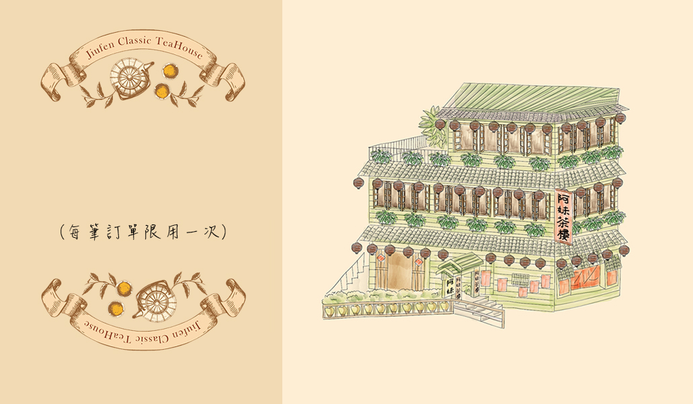

遊戲的任務是尋找九份特產。
找出以上三個隱藏在畫面中的特產，在遊戲面板上點選指定的九份特產即可獲得優惠券，優惠券可以折抵購物商城中的消費唷!
您需要尋找的三個物品皆為九份特產，
找到並使用滑鼠點選特產後，您選到的特產會以紅圈標示：
該特產名稱的顏色會變暗。
當您找不到特產時，您可以按左上角的提示尋求幫助。
提示按鈕可以幫助你找到特產、達成任務。
現在就開始遊戲吧!
恭喜您獲得優惠券!!

芋圓是在1946年被研發出來的
，創始者為蔡林保雲，居住在
瑞芳。
1970年代，一位阿柑姨於九份
國小附近擺攤兼賣冰品，因客
人要求開始增加芋圓當佐料，
隨著觀光推廣而成為當地著名
小吃芋園剉冰，而成為著名的「賴阿婆芋圓」。
草仔粿又稱草粿，因將漿團加入鼠麴草，所以又稱鼠麴粿。草仔粿為台灣中元普渡和掃墓祭拜時的米製食品，為平埔族漢化過後的食物。
外型扁平約巴掌大小，以艾草或鼠麴草揉製而成，顏色呈綠色粿，帶著淡淡的青草香，內常以蘿蔔切絲或紅豆泥為餡，以香蕉葉、月桃葉等為墊底。

肉圓是一種臺灣的特色街頭小吃，名稱源自於其外觀，肉圓半透明扁圓形，是一種以地瓜粉食品。除了最常見的圓形之外，亦有三角形的北斗肉圓，相傳北斗肉圓是最早的肉圓，但目前不若圓形肉圓普及。
肉圓誕生已有120年的歷史。九份的紅槽素肉圓以豆粉製作素肉，浸泡紅槽，再加入中藥炒香，以筍絲、香菇為內餡，以糯米漿、地瓜粉製作外皮，是九份著名小吃之一。